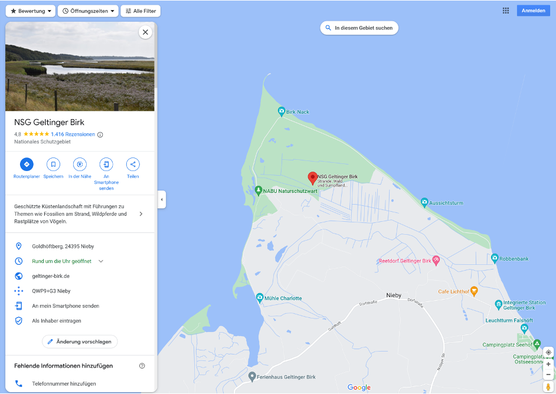
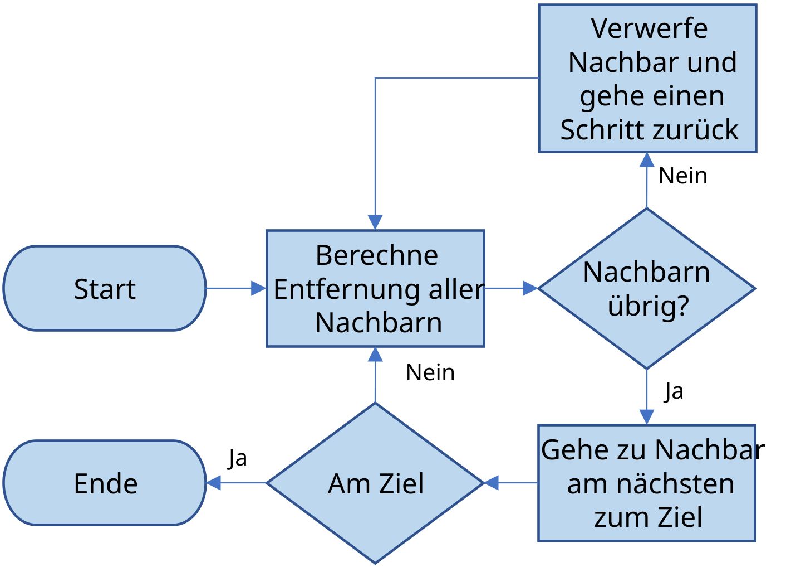
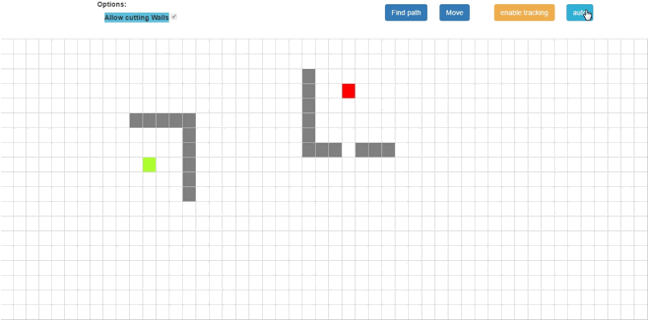
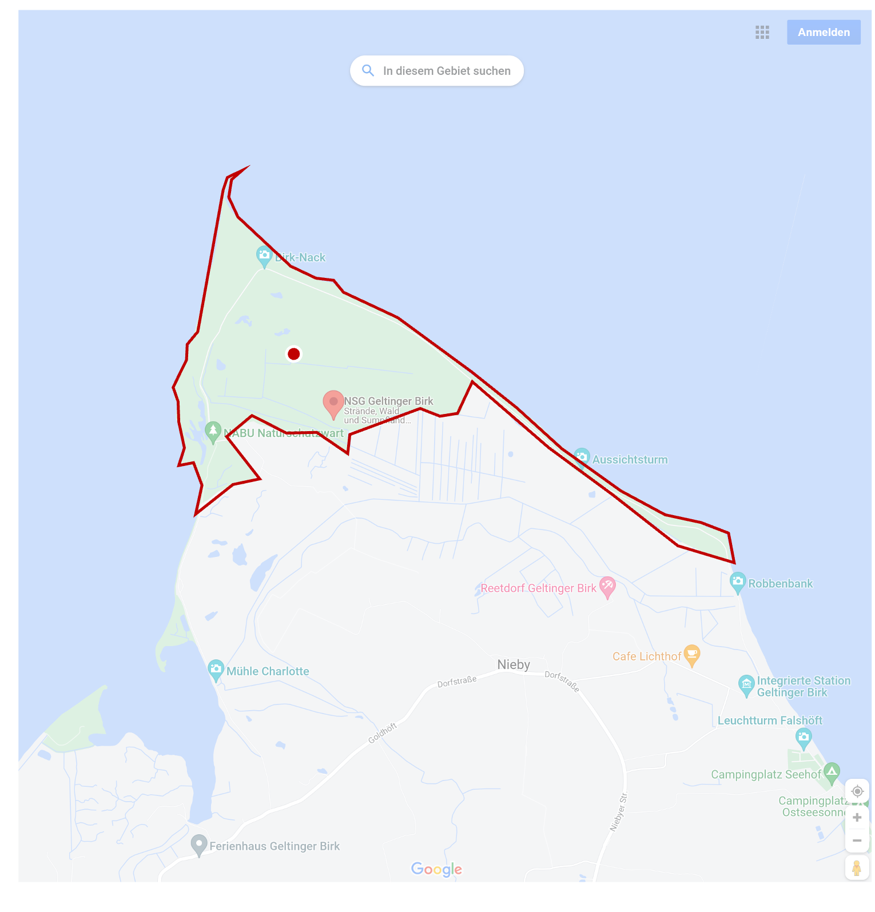
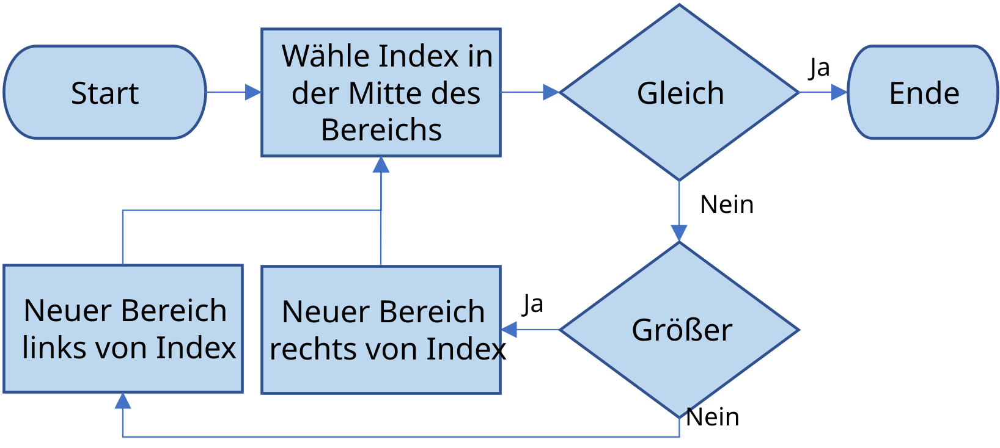

baumN = (12, [
(6,[
(3,[]),
(9,[])
]),
(18,[
(15,[]),
(21,[])
])
])Algorithmen
Joern Ploennigs · AI4SC
Midjourney: Two Towers, ref. M.C. Escher
Hörsaalfrage
Messstationen nach Entfernung sortieren und danach pruefen, ob eine davon in einem Schutzgebiet liegt: Was ist der erste Schritt?

Problemklassen und Algorithmen
Algorithmen — erst die Klasse, dann das Verfahren
Algorithmen
Algorithmen sind wohldefinierte, eindeutige Handlungsanweisungen.
Die Problemklasse bestimmt die Algorithmenfamilie. Erst identifizieren, dann wählen.
- Bekannte Beispiele: Schriftliche Division, Dreieckskonstruktion
- In der Informatik: computerausführbar und endlich
- Programmieren = Algorithmen + Datenstrukturen kombinieren
Vier Problemklassen erkennen
Sortieren
- Elemente in eine Reihenfolge bringen
- Erkennungszeichen: „sortiere”, „ordne”, „rangiere”
Suchen
- Ein Element in einer Menge finden
- Erkennungszeichen: „finde”, „enthält”, „liegt in”
Pfad
- Optimale Route zwischen Knoten finden
- Erkennungszeichen: „kürzester Weg”, „nächste Station”, „Route”
Partition
- Menge nach Kriterium aufteilen
- Erkennungszeichen: „liegt in Zone”, „gehört zu Gruppe”, „klassifiziere”
Algorithmen-Erkennung: Szenarien 1 & 2
Szenario 1
„Finde die nächste Regenmessstation zum Monitoring-Punkt.”
→ Suche — Element mit kleinstem Abstand finden
Verfahren: lineare Suche, binäre Suche, k-d-Baum
Szenario 2
„Ordne Bauangebote nach Kosten.”
→ Sortieren — Elemente in aufsteigende Reihenfolge bringen
Verfahren: sorted(), Quick Sort, Insertion Sort
Algorithmen-Erkennung: Szenarien 3 & 4
Szenario 3
„Berechne den kürzesten Zufahrtsweg zum Überflutungsgebiet.”
→ Pfad — optimale Route in einem Netzwerk
Verfahren: Dijkstra, A*
Szenario 4
„Prüfe, welche Gebäude im Überschwemmungsgebiet liegen.”
→ Partition / Räumliche Anfrage — Punkt-in-Polygon-Test
Verfahren: Ray Casting, Polygon-Enthaltungstest
Heuristiken
Heuristiken liefern schnelle Naeherungen
- Keine vollstaendig festgelegten Rechenschritte
- Beruhen auf Erfahrung oder schaetzenden Regeln
- Liefern oft schnell ein brauchbares Ergebnis
- Keine Garantie fuer die optimale Loesung
- Beispiele: Expertenschaetzung, schrittweises Annaehern
Exkurs – A*-Suchalgorithmus als Heuristik
Wegsuche als kombinatorisch anspruchsvolles Problem
A* kombiniert bekannte Kosten und heuristische Schaetzung
Ziel: kuerzesten Weg in einem Feld mit Hindernissen effizient finden

Midjourney: Schematische Wegsuche auf einem Raster mit Hindernissen

Midjourney: Animierte Suche eines Pfads durch ein HindernisfeldPunkt-in-Polygon als typische Raumfrage
- Polygon = beliebiges Vieleck
- Typische Frage in Bau- und Umweltanwendungen
- Beispiel: Liegt ein geplantes Objekt in einem Naturschutzgebiet?

Polygon Beispiel
Hörsaalfrage
Wie laesst sich bestimmen, ob ein Punkt in einem Polygon liegt?
Ein Punkt-in-Polygon-Test braucht klare Ein- und Ausgaben
Eingaben
- Position des Punktes
x - Linienzug, der den Polygonrand beschreibt
- Liste verbundener, aufeinanderfolgender Linien
Ausgabe
- Boolescher Wert: innerhalb oder ausserhalb

Midjourney: Punktlage in einer stilisierten KartenansichtEin Punkt-in-Polygon-Test nutzt lokale Geometrie
- Punkt-Linie-Beziehungen als Bausteine
- Pruefen, ob der Punkt genau auf einer Linie liegt
- Pruefen, auf welcher Seite einer Linie der Punkt liegt
- Fuer konvexe Flaechen oft ausreichend
- Fuer konkave Flaechen allein nicht ausreichend
Datenstrukturen: Bäume
Ein Baum organisiert Elemente hierarchisch
Datenstruktur
Baum: Hierarchische Datenstruktur mit Knoten und Unterknoten
12
/ \
6 18
/ \ / \
3 9 15 21- Jedes Element: Knoten
- Verbindung zwischen Knoten: Kante
- Oberstes Element: Wurzel
Rekursion durchlaeuft den Baum schrittweise
- Traversierung = Baum systematisch durchlaufen
- Typischer Einsatz: Elemente ausgeben oder suchen
Sortieren
Problemklasse: Sortieren
Problemklasse: Sortieren
- Speziell das Sortieren von Listen, unabhängig vom Datentyp
- Eine der Standard-Anwendungen für Schleifen und Rekursion
- Die Lösung im Programmieralltag:
sorted() - Gutes Beispiel für strukturiertes Informatik-Problem
Sortieren – Algorithmus 1: Bubble Sort
- Benachbarte Elemente vergleichen
- Kleineres Element nach links tauschen
- Wiederholen, bis kein Tausch mehr noetig ist
Quick Sort teilt die Liste rekursiv auf
Grundprinzip: Liste in kleinere Teilprobleme zerlegen
- Ein mittleres Element als Pivot waehlen.
- Dann wird die Liste durchlaufen und jedes Element mit dem Pivot verglichen.
- Einsortieren in drei Listen: kleiner, gleich, groesser.
- Quick Sort rekursiv auf die Listen kleiner und groesser anwenden.
- Am Ende alle Teillisten wieder zusammenfuehren.
Suchen
Problemklasse: Suchen
Problemklasse: Suchen
- Speziell das Suchen auf sortierten Listen und Bäumen
- Meist kennt man die Anzahl an Elementen, weiß also genau wo z.B. die Mitte ist.
- In echten Anwendungen: Datensätze haben oft mehr als einen Wert (Tabellen), hier arbeitet man mit Indexierung.
Suchen – Suche in Listen
Die einfachste Methode: lineare Suche
Binaere Suche halbiert den Suchraum
Ziel: Index einer Zahl in einer sortierten Liste finden
Mittleres Element mit dem Suchwert vergleichen
Gleich: gefunden
Kleiner: in der linken Haelfte weitersuchen
Groesser: in der rechten Haelfte weitersuchen

Midjourney: Schema einer halbierten Suchliste mit markierter Mitte
 Midjourney: Visualisierung einer Zahlensuche in einer geordneten Liste
Midjourney: Visualisierung einer Zahlensuche in einer geordneten Liste
Suchen – Binäre Suche
- Voraussetzung: Liste ist bereits sortiert
- Mittleres Element mit dem Suchwert vergleichen
- Kleinerer Suchwert: linke Haelfte
- Groesserer Suchwert: rechte Haelfte
- Umsetzung haeufig rekursiv oder iterativ
Suchen – Strategien im Baum
Strategien um einen unsortierten Baum zu durchsuchen:
- Breitensuche: Vom Ursprung beginnend jede „Ebene” des Baumes von links nach rechts durchlaufen.
- Tiefensuche: Einem Pfad vom Ursprung bis zum Ende folgen, dann schrittweise rückwärts gehen bis sich weitere Pfade anbieten.
Suchen – Suchbäume
In sortierten Bäumen (Suchbäumen) kann das Ergebnis extrem effizient gefunden werden, da nur ein Pfad durchlaufen werden muss.
Wie sortiert man einen Baum?
Ein binaerer Suchbaum entsteht schrittweise
Ausgangsliste: 12 6 18 15 3 21 9
Schritt 1: 12 als Wurzel setzen
12Schritt 2: 6 < 12, links einfuegen
12
/
6Schritt 3: 18 > 12, rechts einfuegen
12
/ \
6 18Schritt 4: 15 > 12, aber 15 < 18
12
/ \
6 18
/
15Der Suchbaum waechst schrittweise
Schritt 5: 3 < 12 und 3 < 6
12
/ \
6 18
/ /
3 15Schritt 6: 21 > 12 und 21 > 18
12
/ \
6 18
/ / \
3 15 21Schritt 7: 9 < 12, aber 9 > 6
12
/ \
6 18
/ \ / \
3 9 15 21Fertiger Suchbaum
Exkurs: Komplexität und effiziente Algorithmen
Die eigentliche Berechnungszeit ergibt sich erst durch die genauen Eingabedaten und den genutzten Prozessor.
Formal ist Effizienz stattdessen eher eine Anstiegskurve, welche eine relative Schätzung abgibt wie viel länger ein Algorithmus bei mehr Eingabedaten rechnen muss.
Notation: \(O(x)\), wobei \(x\) die Menge der nötigen Rechenschritte angibt.
Für Bäume und Listen hängt diese von der Anzahl an Elementen ab (Variable \(n\)).
Komplexität – Vergleich der Algorithmen
Suchverfahren:
Lineare Suche \[O(n)\]
Binäre Suche \[O(\log(n))\]
Sortierverfahren:
Bubble Sort \[O(n^2)\]
Quick Sort \[O(n \cdot \log(n))\]
KI und Algorithmenauswahl
KI und Algorithmenauswahl – das Problem
KI und Algorithmen
KI waehlt oft einen naheliegenden Algorithmus, nicht unbedingt den geeigneten:
- Suchen → lineare Suche \(O(n)\)
- Sortieren → Bubble Sort \(O(n^2)\)
- Weg finden → Brute Force
Fuer kleine Datenmengen kann das ausreichen. Bei grossen Datenmengen entstehen schnell deutliche Laufzeitnachteile.
Warum?
KI generiert oft funktionierenden und lesbaren Code. Eine gute Algorithmuswahl setzt voraus, dass die Problemklasse vorher bestimmt wird.
Erkenne die Klasse → formuliere den Prompt → verifiziere den Code.
KI und Algorithmenauswahl – Prompting-Strategie
Ohne Problemklasse im Prompt:
„Schreibe eine Funktion, die prueft, ob 15 in der Liste ist.”
→ KI gibt oft lineare Suche
Mit Problemklasse im Prompt:
„Die Liste ist sortiert. Implementiere eine binäre Suche für diesen Anwendungsfall.”
→ KI wählt den richtigen Algorithmus
Verifizieren:
- Gibt die Funktion den Index zurück?
- Wird
mid = low + (high - low)//2berechnet? - Terminiert die Rekursion bei leerer Teilliste?
- Teste mit bekanntem Ergebnis:
binary_search([3,6,9,12], 9)→ Index 2
Agentischer Arbeitsablauf: Algorithmen
Vor dem Prompting
1. Problemklasse identifizieren: Suchen, Sortieren, Pfad oder Partition?
2. Klasse in den Prompt einbauen:
„Implementiere eine binäre Suche für diese sortierte Liste.”
3. Generierten Code verifizieren:
- Stimmt die Komplexitätsklasse? (\(O(\log n)\) für binäre Suche)
- Wird die Sortiervoraussetzung berücksichtigt?
- Terminiert die Rekursion korrekt?
→ Nächste Vorlesung: Rekursion als Divide-and-Conquer-Strategie (09b_Rekursion)
Questions

Artificial
Intelligence